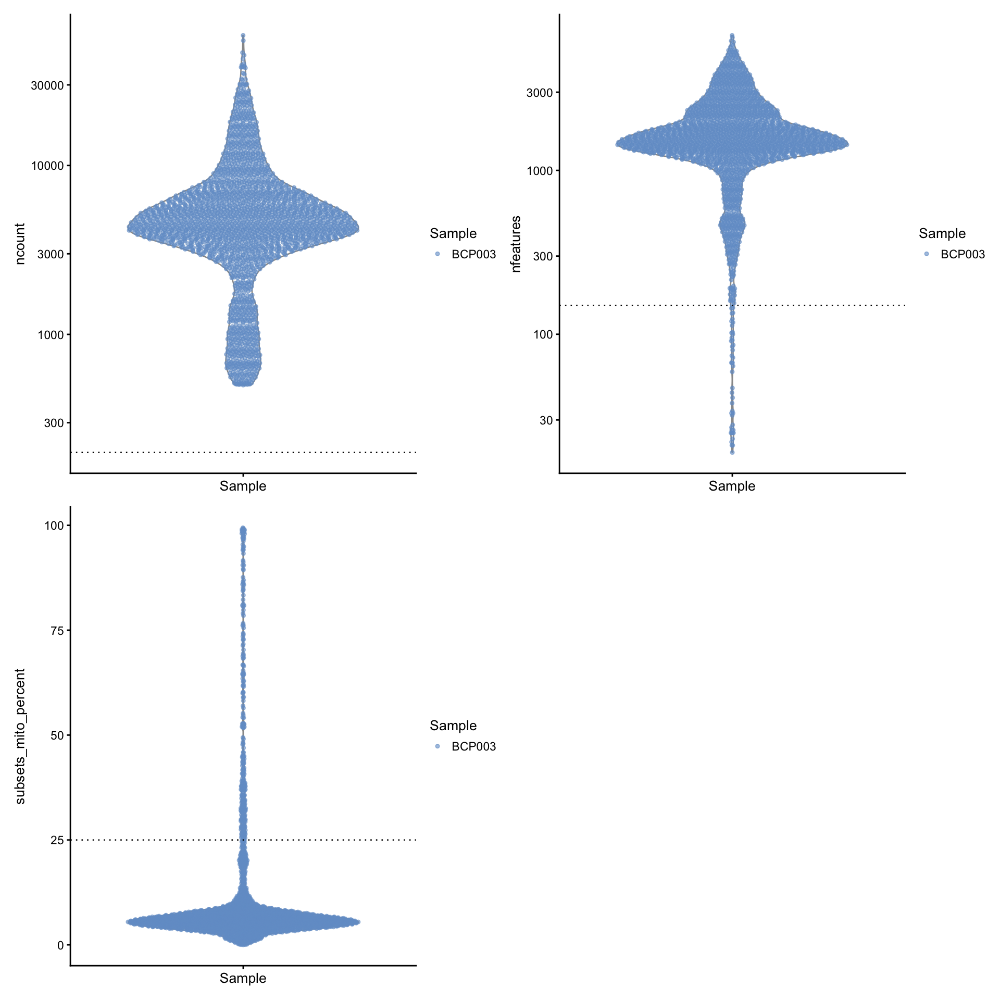
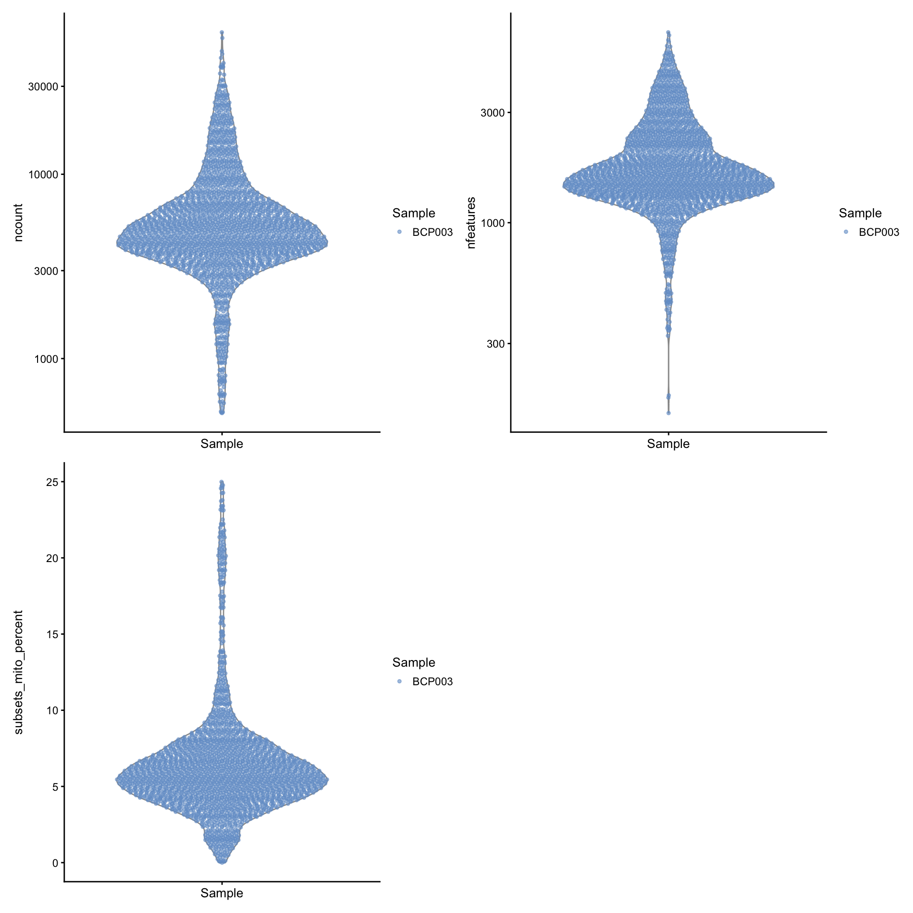

Last updated: 2026-06-09
Checks: 7 0
Knit directory:
ambient_doublet_singlecell/
This reproducible R Markdown analysis was created with workflowr (version 1.7.1). The Checks tab describes the reproducibility checks that were applied when the results were created. The Past versions tab lists the development history.
Great! Since the R Markdown file has been committed to the Git repository, you know the exact version of the code that produced these results.
Great job! The global environment was empty. Objects defined in the global environment can affect the analysis in your R Markdown file in unknown ways. For reproduciblity it’s best to always run the code in an empty environment.
The command set.seed(20260605) was run prior to running
the code in the R Markdown file. Setting a seed ensures that any results
that rely on randomness, e.g. subsampling or permutations, are
reproducible.
Great job! Recording the operating system, R version, and package versions is critical for reproducibility.
Nice! There were no cached chunks for this analysis, so you can be confident that you successfully produced the results during this run.
Great job! Using relative paths to the files within your workflowr project makes it easier to run your code on other machines.
Great! You are using Git for version control. Tracking code development and connecting the code version to the results is critical for reproducibility.
The results in this page were generated with repository version 7dbcc30. See the Past versions tab to see a history of the changes made to the R Markdown and HTML files.
Note that you need to be careful to ensure that all relevant files for
the analysis have been committed to Git prior to generating the results
(you can use wflow_publish or
wflow_git_commit). workflowr only checks the R Markdown
file, but you know if there are other scripts or data files that it
depends on. Below is the status of the Git repository when the results
were generated:
Ignored files:
Ignored: .DS_Store
Ignored: .RData
Ignored: .Rhistory
Ignored: .Rproj.user/
Ignored: output/data/
Untracked files:
Untracked: .Renviron
Untracked: analysis/figure_01.Rmd
Untracked: code/Tonsil_10xFlex/
Untracked: code/ambient_tools/
Untracked: code/doublet_tools/
Untracked: renv.lock
Untracked: renv/
Unstaged changes:
Modified: .Rprofile
Modified: .gitignore
Note that any generated files, e.g. HTML, png, CSS, etc., are not included in this status report because it is ok for generated content to have uncommitted changes.
These are the previous versions of the repository in which changes were
made to the R Markdown
(analysis/Tonsils_10x5pGEX_BCP003_uncorrected_scDblFinder.Rmd)
and HTML
(docs/Tonsils_10x5pGEX_BCP003_uncorrected_scDblFinder.html)
files. If you’ve configured a remote Git repository (see
?wflow_git_remote), click on the hyperlinks in the table
below to view the files as they were in that past version.
| File | Version | Author | Date | Message |
|---|---|---|---|---|
| Rmd | 7dbcc30 | Michelle Meier | 2026-06-09 | wflow_publish("analysis/Tonsils_10x5pGEX_BCP003_uncorrected_scDblFinder.Rmd") |
This markdown performs doublet calling using scDblFinder on a tonsil sample presented in Single-cell analysis of human B cell maturation predicts how antibody class switching shapes selection dynamics - we selected sample BCP003, which was sequenced using 10X Chromium 5’ v1.
This analysis includes:
removal of low quality cells
scDblFinder doublet calling
export of results as qs2 object, as well as in 10X
cellranger output format
suppressPackageStartupMessages({
library(tidyverse)
library(here)
library(glue)
library(DropletUtils)
library(scran)
library(scater)
library(scuttle)
library(scales)
library(readr)
library(Seurat)
library(scDblFinder)
library(scMerge)
library(ggpubr)
library(BiocParallel)
library(clustree)
library(SingleCellExperiment)
library(scMerge)
library(Matrix)
library(SeuratDisk)
library(qs2)
library(patchwork)
})plot_sizing <- theme_bw()+
theme(axis.title = element_text(size = 16),
axis.text = element_text(size = 14, colour = "black"),
plot.title = element_text(size = 18),
plot.subtitle = element_text(size = 16),
legend.text = element_text(size = 14),
legend.title = element_blank())
plot_sizing_keep_title <- theme(axis.title = element_text(size = 16),
axis.text = element_text(size = 14, colour = "black"),
plot.title = element_text(size = 18),
plot.subtitle = element_text(size = 16),
legend.text = element_text(size = 14),
legend.title = element_text(size = 14) )
rotate_x <- theme(axis.text.x = element_text(angle = 90, vjust = 0.5, hjust=1))
strip_fix <- theme(strip.background = element_rect(fill = "white"),
strip.text = element_text(size = 14))The cellranger outputs for this sample were downloaded from BioStudies, accession number E-MTAB-9005.
counts <- Read10X(here('data/Tonsils_King/scRNA-seq/BCP003_Total_5GEX_filtered_feature_bc_matrix'))
sce <- SingleCellExperiment(assays = c("counts" = counts))
sceclass: SingleCellExperiment
dim: 33538 2538
metadata(0):
assays(1): counts
rownames(33538): MIR1302-2HG FAM138A ... AC213203.1 FAM231C
rowData names(0):
colnames(2538): AAACCTGAGTAACCCT-1 AAACCTGCACTCGACG-1 ...
TTTGTCAGTGCAACTT-1 TTTGTCAGTGGCCCTA-1
colData names(0):
reducedDimNames(0):
mainExpName: NULL
altExpNames(0):Low quality cells will be removed prior to performing doublet detection. Our main goal here is to eliminate cells with a very low library size and/or number of genes detected, as well as cells with unusually high % mitochondrial reads as their presence may interfere with doublet calling.
Add per cell summary metrics
is.mito <- grepl(pattern = "^MT", rownames(sce))
sce <- addPerCellQCMetrics(sce, subsets = list(mito = is.mito))
new_meta <- sce@colData %>% as.data.frame() %>% #immediately clean up metadata
dplyr::rename(., nfeatures = detected, ncount = sum) %>%
select(., -c("subsets_mito_sum", "subsets_mito_detected", "total"))
sce@colData <- new_meta %>% DataFrame()
sce$Sample <- "BCP003" #there only is one sample, but adding for plotting reasonsPlot distribution of library sizes, detected genes and %mito. The dotted lines indicate selected thresholds. Note that compared to 10X Flex datasets, the %mito threshold needs to be increased. The probes for mito genes in 10X flex data are less abundant than for other genes to reduce the amount of mito genes captured. This is not true for non-probe based sequencing.
p1 <- plotColData(
sce,
"ncount",
x = "Sample",
colour_by = "Sample",
point_size = 1) +
scale_y_log10() +
theme(axis.text.x = element_blank()) +
geom_hline(yintercept = 200,
linetype = "dotted")
p2 <- plotColData(
sce,
"nfeatures",
x = "Sample",
colour_by = "Sample",
point_size = 1) +
scale_y_log10() +
theme(axis.text.x = element_blank()) +
geom_hline(yintercept = 150,
linetype = "dotted")
p3 <- plotColData(
sce,
"subsets_mito_percent",
x = "Sample",
colour_by = "Sample",
point_size = 1) +
theme(axis.text.x = element_blank()) +
geom_hline(yintercept = 25,
linetype = "dotted")
p1+p2+p3 + plot_layout(ncol=2)
Remove cells.
sce$high_quality_cell <- (sce$ncount >= 200) & (sce$nfeatures >= 150) & (sce$subsets_mito_percent <= 25)
sce@colData %>% as.data.frame() %>%
group_by(Sample,high_quality_cell) %>%
summarise(count = n()) %>%
group_by(Sample) %>%
mutate(., percent_kept = round(count/sum(count),5)) %>%
filter(., high_quality_cell == FALSE) %>%
select(Sample, count, percent_kept) %>%
dplyr::rename(removed_cell=count) %>%
knitr::kable() `summarise()` has grouped output by 'Sample'. You can override using the
`.groups` argument.| Sample | removed_cell | percent_kept |
|---|---|---|
| BCP003 | 254 | 0.10008 |
sce_filtered <- sce[rowSums(counts(sce)) > 50, sce$high_quality_cell == T] #also remove genes that are barely expressed
sce_filteredclass: SingleCellExperiment
dim: 10684 2284
metadata(0):
assays(1): counts
rownames(10684): AL669831.5 NOC2L ... AC233755.2 AC233755.1
rowData names(1): subsets_mito
colnames(2284): AAACCTGAGTAACCCT-1 AAACCTGCACTCGACG-1 ...
TTTGTCAGTGCAACTT-1 TTTGTCAGTGGCCCTA-1
colData names(5): ncount nfeatures subsets_mito_percent Sample
high_quality_cell
reducedDimNames(0):
mainExpName: NULL
altExpNames(0):Plot distributions post filtering
p1 <- plotColData(
sce_filtered,
"ncount",
x = "Sample",
colour_by = "Sample",
point_size = 1) +
scale_y_log10() +
theme(axis.text.x = element_blank())
p2 <- plotColData(
sce_filtered,
"nfeatures",
x = "Sample",
colour_by = "Sample",
point_size = 1) +
scale_y_log10() +
theme(axis.text.x = element_blank())
p3 <- plotColData(
sce_filtered,
"subsets_mito_percent",
x = "Sample",
colour_by = "Sample",
point_size = 1) +
theme(axis.text.x = element_blank())
p1+p2+p3 + plot_layout(ncol=2)
Running scDblFinder for doublet detection. We have already removed cells with very low library size and very high mitochondrial content. scDblFinder requires a standard workflow to be run on the SCE.
#standard workflow
sce_filtered <- logNormCounts(sce_filtered) %>%
runPCA() %>%
runUMAP()
#scDblFinder
set.seed(1997)
sce_filtered <- scDblFinder(sce_filtered,
clusters = T,
dbr.sd = 1, #removing doublet rate assumption
verbose=F) Before we export the data, lets tidy up the metadata.
new_meta <- sce_filtered@colData %>% as.data.frame() %>%
select(., c("Sample", "ncount", "nfeatures", "subsets_mito_percent", "sizeFactor", "scDblFinder.class", "scDblFinder.score"))
sce_filtered@colData <- new_meta %>% DataFrame()Exporting whole object.
filename <- here("output/data/Tonsils_5pGEX/Tonsils_5pGEX_BCP003_processed_scdblfinder.qs2")
qs_save(object = sce_filtered, file = filename)Using the cellranger output format also saves a lot of space and allows us to load in specific things we need, such as just the metadata, or just barcodes.
DropletUtils::write10xCounts(path = here("output/data/Tonsils_5pGEX/Tonsils_5pGEX_BCP003_processed/"),
x = counts(sce_filtered),
version = "3")
#export metadata
write_tsv(x=as.data.frame(sce_filtered@colData), file=here("output/data/Tonsils_5pGEX/Tonsils_5pGEX_BCP003_processed/metadata.tsv"))
sessionInfo()R version 4.5.0 (2025-04-11)
Platform: aarch64-apple-darwin20
Running under: macOS Sequoia 15.7.4
Matrix products: default
BLAS: /Library/Frameworks/R.framework/Versions/4.5-arm64/Resources/lib/libRblas.0.dylib
LAPACK: /Library/Frameworks/R.framework/Versions/4.5-arm64/Resources/lib/libRlapack.dylib; LAPACK version 3.12.1
locale:
[1] en_US.UTF-8/en_US.UTF-8/en_US.UTF-8/C/en_US.UTF-8/en_US.UTF-8
time zone: Australia/Melbourne
tzcode source: internal
attached base packages:
[1] stats4 stats graphics grDevices datasets utils methods
[8] base
other attached packages:
[1] patchwork_1.3.2 qs2_0.1.5
[3] SeuratDisk_0.0.0.9021 Matrix_1.7-3
[5] clustree_0.5.1 ggraph_2.2.1
[7] BiocParallel_1.42.1 ggpubr_0.6.0
[9] scMerge_1.24.0 scDblFinder_1.22.0
[11] Seurat_5.3.1.0000 SeuratObject_5.1.0
[13] sp_2.2-0 scales_1.4.0
[15] scater_1.36.0 scran_1.36.0
[17] scuttle_1.18.0 DropletUtils_1.28.0
[19] SingleCellExperiment_1.30.1 SummarizedExperiment_1.38.1
[21] Biobase_2.68.0 GenomicRanges_1.60.0
[23] GenomeInfoDb_1.44.0 IRanges_2.42.0
[25] S4Vectors_0.46.0 BiocGenerics_0.54.0
[27] generics_0.1.4 MatrixGenerics_1.20.0
[29] matrixStats_1.5.0 glue_1.8.0
[31] here_1.0.1 lubridate_1.9.4
[33] forcats_1.0.0 stringr_1.5.1
[35] dplyr_1.1.4 purrr_1.2.0
[37] readr_2.1.5 tidyr_1.3.1
[39] tibble_3.3.0 ggplot2_4.0.1
[41] tidyverse_2.0.0 workflowr_1.7.1
loaded via a namespace (and not attached):
[1] R.methodsS3_1.8.2 vroom_1.6.5
[3] nnet_7.3-20 goftest_1.2-3
[5] Biostrings_2.76.0 HDF5Array_1.36.0
[7] rstan_2.32.7 vctrs_0.6.5
[9] spatstat.random_3.4-1 digest_0.6.37
[11] png_0.1-8 git2r_0.36.2
[13] ggrepel_0.9.6 deldir_2.0-4
[15] parallelly_1.45.0 batchelor_1.24.0
[17] renv_1.1.4 MASS_7.3-65
[19] reshape2_1.4.4 httpuv_1.6.16
[21] withr_3.0.2 xfun_0.52
[23] survival_3.8-3 memoise_2.0.1
[25] proxyC_0.5.2 ggbeeswarm_0.7.2
[27] zoo_1.8-14 gtools_3.9.5
[29] V8_8.0.1 pbapply_1.7-2
[31] DEoptimR_1.1-3-1 R.oo_1.27.1
[33] Formula_1.2-5 promises_1.3.3
[35] httr_1.4.7 rstatix_0.7.2
[37] restfulr_0.0.15 globals_0.18.0
[39] fitdistrplus_1.2-2 cvTools_0.3.3
[41] rhdf5filters_1.20.0 stringfish_0.17.0
[43] ps_1.9.1 rhdf5_2.52.1
[45] rstudioapi_0.17.1 UCSC.utils_1.4.0
[47] miniUI_0.1.2 base64enc_0.1-3
[49] processx_3.8.6 curl_7.0.0
[51] sfsmisc_1.1-20 ScaledMatrix_1.16.0
[53] h5mread_1.0.1 polyclip_1.10-7
[55] GenomeInfoDbData_1.2.14 SparseArray_1.8.0
[57] xtable_1.8-4 evaluate_1.0.3
[59] S4Arrays_1.8.1 hms_1.1.3
[61] irlba_2.3.5.1 colorspace_2.1-1
[63] hdf5r_1.3.12 ROCR_1.0-11
[65] reticulate_1.42.0 spatstat.data_3.1-6
[67] magrittr_2.0.4 lmtest_0.9-40
[69] later_1.4.2 viridis_0.6.5
[71] lattice_0.22-6 robustbase_0.99-4-1
[73] spatstat.geom_3.4-1 future.apply_1.20.0
[75] getPass_0.2-4 scattermore_1.2
[77] XML_3.99-0.18 cowplot_1.1.3
[79] RcppAnnoy_0.0.22 Hmisc_5.2-3
[81] pillar_1.10.2 StanHeaders_2.32.10
[83] nlme_3.1-168 caTools_1.18.3
[85] compiler_4.5.0 beachmat_2.24.0
[87] RSpectra_0.16-2 stringi_1.8.7
[89] tensor_1.5 GenomicAlignments_1.44.0
[91] plyr_1.8.9 crayon_1.5.3
[93] abind_1.4-8 BiocIO_1.18.0
[95] locfit_1.5-9.12 bit_4.6.0
[97] graphlayouts_1.2.2 whisker_0.4.1
[99] codetools_0.2-20 BiocSingular_1.24.0
[101] bslib_0.9.0 QuickJSR_1.8.0
[103] plotly_4.10.4 mime_0.13
[105] splines_4.5.0 Rcpp_1.0.14
[107] fastDummies_1.7.5 sparseMatrixStats_1.20.0
[109] knitr_1.50 reldist_1.7-2
[111] fs_1.6.6 listenv_0.9.1
[113] checkmate_2.3.2 DelayedMatrixStats_1.30.0
[115] pkgbuild_1.4.8 ggsignif_0.6.4
[117] callr_3.7.6 statmod_1.5.0
[119] tzdb_0.5.0 tweenr_2.0.3
[121] startupmsg_1.0.0 pkgconfig_2.0.3
[123] tools_4.5.0 cachem_1.1.0
[125] viridisLite_0.4.2 numDeriv_2016.8-1.1
[127] fastmap_1.2.0 rmarkdown_2.29
[129] grid_4.5.0 ica_1.0-3
[131] Rsamtools_2.24.0 broom_1.0.8
[133] sass_0.4.10 FNN_1.1.4.1
[135] BiocManager_1.30.26 dotCall64_1.2
[137] carData_3.0-5 RANN_2.6.2
[139] rpart_4.1.24 farver_2.1.2
[141] tidygraph_1.3.1 mgcv_1.9-1
[143] yaml_2.3.10 foreign_0.8-90
[145] rtracklayer_1.68.0 cli_3.6.5
[147] lifecycle_1.0.4 uwot_0.2.3
[149] M3Drop_1.34.0 mvtnorm_1.3-3
[151] bluster_1.18.0 backports_1.5.0
[153] distr_2.9.7 timechange_0.3.0
[155] gtable_0.3.6 rjson_0.2.23
[157] ggridges_0.5.6 densEstBayes_1.0-2.2
[159] progressr_0.15.1 parallel_4.5.0
[161] limma_3.64.1 jsonlite_2.0.0
[163] edgeR_4.6.2 RcppHNSW_0.6.0
[165] bitops_1.0-9 bit64_4.6.0-1
[167] xgboost_1.7.11.1 Rtsne_0.17
[169] spatstat.utils_3.1-4 BiocNeighbors_2.2.0
[171] RcppParallel_5.1.10 bdsmatrix_1.3-7
[173] jquerylib_0.1.4 metapod_1.16.0
[175] dqrng_0.4.1 loo_2.8.0
[177] spatstat.univar_3.1-3 R.utils_2.13.0
[179] lazyeval_0.2.2 shiny_1.10.0
[181] ruv_0.9.7.1 htmltools_0.5.8.1
[183] sctransform_0.4.2 spam_2.11-1
[185] ResidualMatrix_1.18.0 XVector_0.48.0
[187] RCurl_1.98-1.17 rprojroot_2.0.4
[189] gridExtra_2.3 igraph_2.1.4
[191] R6_2.6.1 gplots_3.2.0
[193] labeling_0.4.3 cluster_2.1.8.1
[195] bbmle_1.0.25.1 Rhdf5lib_1.30.0
[197] rstantools_2.4.0 DelayedArray_0.34.1
[199] tidyselect_1.2.1 vipor_0.4.7
[201] htmlTable_2.4.3 ggforce_0.5.0
[203] inline_0.3.21 car_3.1-3
[205] future_1.58.0 rsvd_1.0.5
[207] KernSmooth_2.23-26 S7_0.2.1
[209] data.table_1.17.4 htmlwidgets_1.6.4
[211] RColorBrewer_1.1-3 rlang_1.1.6
[213] spatstat.sparse_3.1-0 spatstat.explore_3.4-3
[215] beeswarm_0.4.0